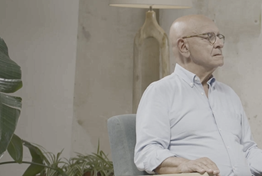
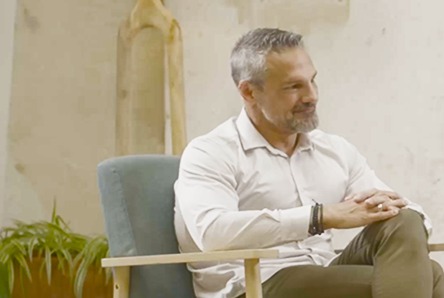
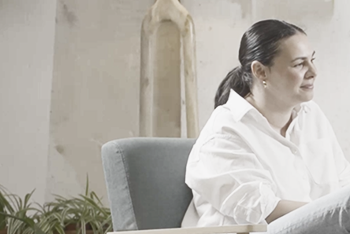
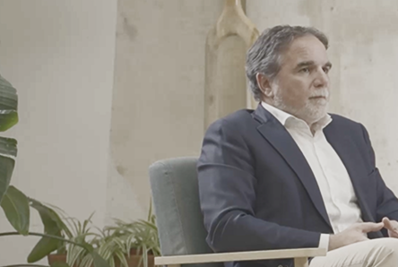
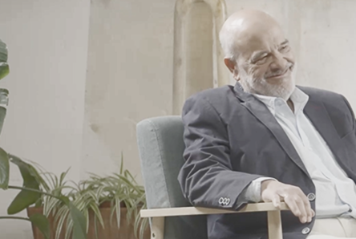

Próximamente 04Cómo la innovación está cambiando la medicina y la longevidad saludable
Dr. José Viña
en colaboración con Adeslas
Dr. Manuel Castillo

02Dr. David Céspedes

03Dra. Amanda Fernández

Próximamente 04Dr. José Viña

Próximamente 05Dr. Javier Quintero

Próximamente 06Dr. Luis Tapia